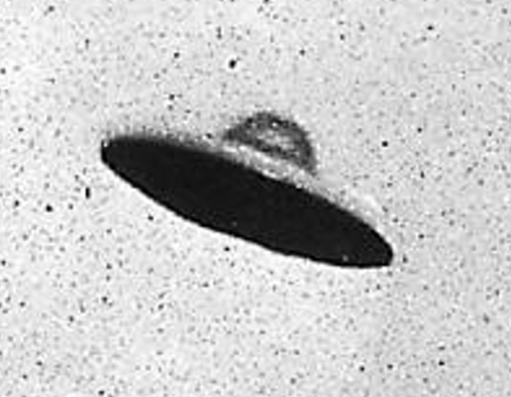

“Fyffe UFO” AKA “Unidentified Flying Objects” (UFO) or “Unidentified Aerial Phenomenon" (UAP)
Location: Fyffe, Alabama
On the night of February 11, 1989, a heavy silence fell over Fyffe, Alabama – a silence that would soon be broken by more than fifty residents witnessing the unimaginable. What began as a single, frantic phone call to dispatcher Shelia Smith quickly spiraled into a two-night vigil for a town of two thousand. They spoke of a craft hovering at impossible angles, its charcoal-colored belly outlined in a ghostly green glow, with three brilliant lights staring down from its center and peaks. For Assistant Chief Fred Works and Chief Junior Garmany, the mystery wasn’t just a report; it was a pursuit. While patrolling near Kelly’s Chapel, they tracked a radiance that mimicked a distant streetlight, trailing it to the heights of Sand Mountain. Just as they thought the sky had surrendered its secrets, the police radio crackled with a warning from nearby Crossville: something was moving “low and fast.” Pulling into a farmer’s driveway to scan the horizon, the officers stepped out into the frigid air. When the craft finally emerged over the tree line, Works asked Garmany to kill the patrol car engine. In the eerie, dead quiet that followed, a massive triangular figure drifted overhead. According to Works description, the craft was so vast that he would have had to hold a beach ball at an arm’s length to block it from view. Yet, there was no hum of a motor, no roar of a jet – only a smooth, predatory glide that bore no markings of any nation or Earthly design. Though Works tried to dismiss the “space booger”, imagining it more likely to be a secret government project, the surrounding darkness suggested something more sinister. As a media circus of over 100 outlets descended on the valley, darker whispers began to circulate. Reports surfaced of low-flying black helicopters with no tail numbers, and more chillingly, cattle found in nearby pastures – surgically mutilated and drained of blood with unexplained, clinical precision. Whether it was a military secret or a visitor from the void, the events of 1989 left DeKalb County with a scar that decades of “war stories” have yet to heal.
Lore:
On the night of February 11, 1989, a heavy silence fell over Fyffe, Alabama – a silence that would soon be broken by more than fifty residents witnessing the unimaginable. What began as a single, frantic phone call to dispatcher Shelia Smith quickly spiraled into a two-night vigil for a town of two thousand. They spoke of a craft hovering at impossible angles, its charcoal-colored belly outlined in a ghostly green glow, with three brilliant lights staring down from its center and peaks.
For Assistant Chief Fred Works and Chief Junior Garmany, the mystery wasn’t just a report; it was a pursuit. While patrolling near Kelly’s Chapel, they tracked a radiance that mimicked a distant streetlight, trailing it to the heights of Sand Mountain. Just as they thought the sky had surrendered its secrets, the police radio crackled with a warning from nearby Crossville: something was moving “low and fast.”
Pulling into a farmer’s driveway to scan the horizon, the officers stepped out into the frigid air. When the craft finally emerged over the tree line, Works asked Garmany to kill the patrol car engine. In the eerie, dead quiet that followed, a massive triangular figure drifted overhead. According to Works description, the craft was so vast that he would have had to hold a beach ball at an arm’s length to block it from view. Yet, there was no hum of a motor, no roar of a jet – only a smooth, predatory glide that bore no markings of any nation or Earthly design.
Though Works tried to dismiss the “space booger”, imagining it more likely to be a secret government project, the surrounding darkness suggested something more sinister. As a media circus of over 100 outlets descended on the valley, darker whispers began to circulate. Reports surfaced of low-flying black helicopters with no tail numbers, and more chillingly, cattle found in nearby pastures – surgically mutilated and drained of blood with unexplained, clinical precision. Whether it was a military secret or a visitor from the void, the events of 1989 left DeKalb County with a scar that decades of “war stories” have yet to heal.
Sources:
https://thecrimsonwhite.com/56148/top-stories/alabamas-ufo-capital-still-has-a-story-to-tell/
https://encyclopediaofalabama.org/article/fyffe/